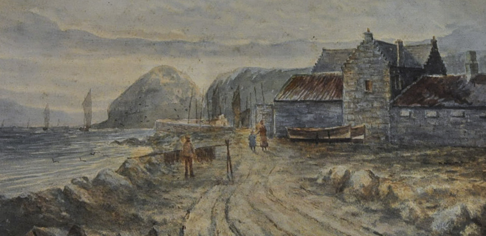
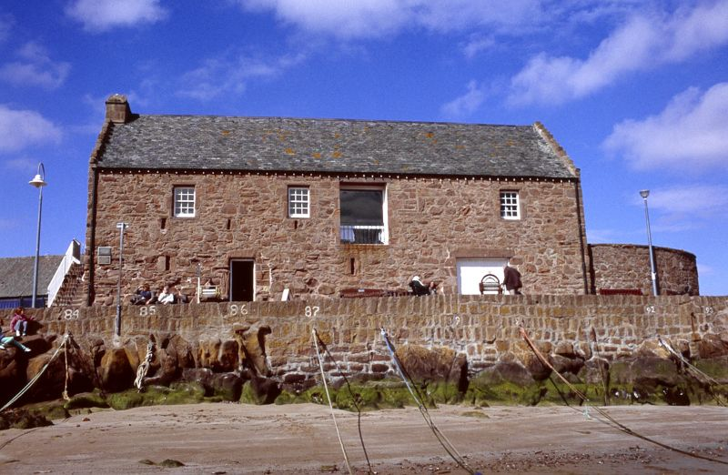
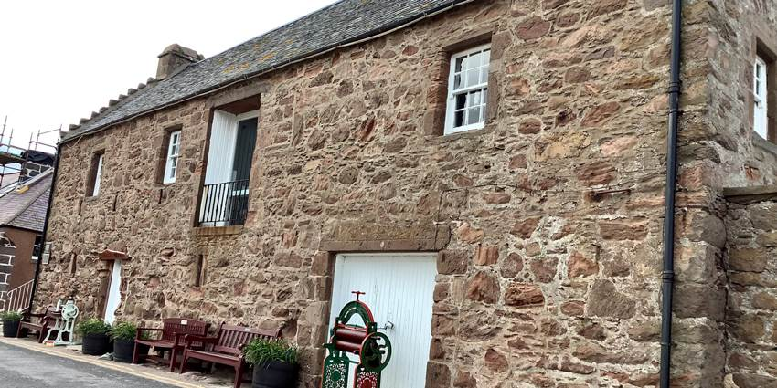

Stonehaven is a town whose name underwent many transformations - from Kilwhang, to Stonehyve,
before finally becoming the Stonehaven we know today.
The town started its life off as an Iron Age fishing village,
growing outwards into what is known today as Stonehaven’s “Auld Toon.”
Fishing became Stonehaven’s primary industry, with the harbour at the centre of it all.
The ancient architecture of the Auld Toon can still be admired along the harbour’s edge today.
The 18th and 19th centuries saw the economy of Stonehaven begin to flourish, and with it,
the formation of the Market Square.
Today, much like in the 19th century, Market Square forms the hub of the town, in which regular festivals,
markets and community events allow a community spirit to thrive.
It is believed that the Stonehaven Tolbooth was founded by George Keith, 5th Earl Marischal in the late 16th century. Though unclear, it is believed by historians that the building was created to act as a storehouse for materials required in the construction of Dunnottar Castle.
In 1600, following the castle’s completion, the building later became the clerical centre for Stonehaven, housing many of the town’s business functions in the upper floors. The lower floors however were to become a prison, and remained so up until 1767, when a municipal building was built to replace it.
Centuries of limited use saw the Tolbooth building fall into a state of decay and dilapidation… Until it was once again bought as recently as the 1950s. Years of renovation took place to restore the Tolbooth to its former glory as a piece of historic architecture.
This work paid off, and the building was officially re-opened by Her Majesty the Queen Mother in 1963, and was later turned into a museum, showcasing Stonehaven’s place in history.
The history of Dunnottar, and later, its castle, spans from as early as 5000BC,
where a Pictish fort was discovered at the site – in fact, it is the oldest Pictish fort ever found.
It is even thanks to the Picts that Dunnottar acquired its name – the “dun” originating from
the Pictish word for “fort.”
It is at this monumental site that the story of Dunnottar Castle can begin.
The site of many a battle in the past, from the invasion of the Vikings in 900AD to the reclamation of land by William Wallace in 1297, it was not until 1593 that Dunnottar Castle could become truly known as a fortress, as the construction of numerous defensive buildings, living quarters, and even a housing for a pet lion was seen to by George Keith, 5th Earl Marischal.
1639 saw the advent of a civil war between Covenanters and the Scottish royalists. Covenanters were captured and held as prisoners in Dunnottar Castle's cellars for their refusal to accept the new religious reforms initiated by King Charles II. The poor conditions led to the deaths of many Covenanter prisoners and, thus, a memorial has since been erected in the Dunnottar Church.
Dunnottar Castle played a crucial role for Scotland in the War of Three Kingdoms. When King Charles II is crowned by 7th Earl Marischal with the Honours of Scotland in 1651, Oliver Cromwell becomes driven to lead an invasion into Scotland’s capital with the Parliamentary Army. With Cromwell’s forces present in Edinburgh, the Honours of Scotland could not be returned to their rightful place there, and thus, the 7th Earl Marischal had to harbour the Honours in Dunnottar Castle.
The Honours of Scotland were hidden in sacks of wool, and hastily taken to the castle by Katherine Drummond, and placed under the defence of George Ogilvie of Barras, to be later returned to King Charles II after his restoration in 1660.
The forfeiture of George Keith, former 10th Earl of Marischal’s title and land in 1715 led to the
abandonment of the castle after over 400 years of leadership by the Keith family.
The land was later bought by the York Mining Company, which stripped the once great castle to ruins.
And so it remained for centuries later, until 1919 where Lord and Lady Cowdray purchase it once more,
initiating an extensive restoration project.
The fruits of their labour can be seen today, as Dunnottar Castle is now available for the public to see, and tales of its history can be read and admired.